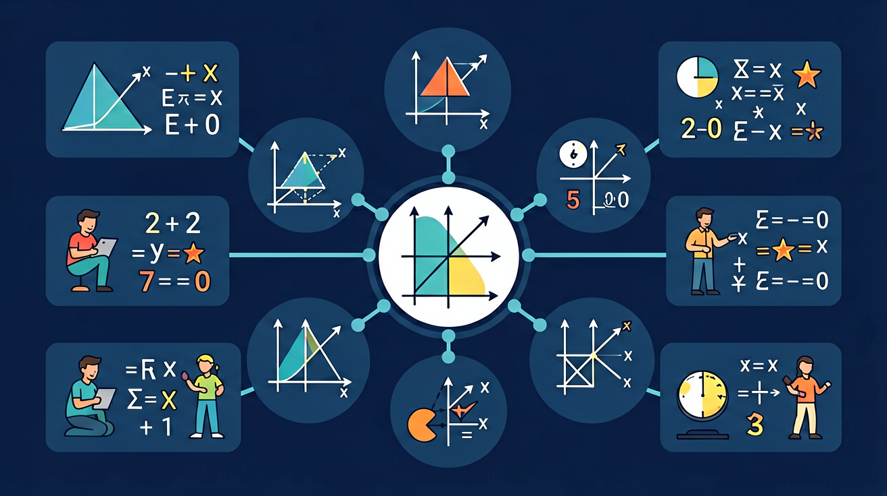

解不等式3x-5≤1时，第一步应
-2x>6的解集是
你已经学会解方程 2x + 3 = 7，找到唯一的 x 值。但是，如果条件是 "2x + 3 > 7" 呢？x 不是唯一一个值，而是一大片！
2x + 3 = 7
解：x = 2（唯一值）
数轴上：一个点
2x + 3 > 7
解：x > 2（无穷多）
数轴上：一条射线
一元一次不等式：只含一个未知数，未知数最高次数为1，且含有不等号的不等式。
其解集是满足不等式的所有 x 的值的集合，通常是一条射线（无穷多个解）。
口诀：有等号（≤或≥）→ 实心圆；无等号（<或>）→ 空心圆
解不等式的步骤和解方程几乎完全一样——移项、合并、系数化1。唯一的区别是：乘除负数时不等号翻转！
例1（系数为正）：解 2x - 4 > 6
例2（系数为负）：解 -3x + 6 > 15
⚠️ 最常见错误类型：
| 错误做法 | 原因 | 正确做法 |
|---|---|---|
| -2x > 8 → x > -4 | 忘记翻转 | x < -4 ✓ |
| x-3>5 → x>2 | 移项符号错 | x > 8 ✓ |
| 2x>-6 → x>-6 | 漏除以2 | x > -3 ✓ |
不等式应用题的关键是找到"不等量关系"，常见于：最多/最少问题、满足条件问题、行程问题等。
例：某工厂计划生产零件，第一天生产了200个，此后每天生产150个。问至少需要几天才能完成1000个的订单？
在实际应用中，x 常常要求是整数（天数、人数、个数等）。
若解出 x > 5.33，且 x 为正整数，则 x ≥ 6（向上取整）
若解出 x < 7.8，且 x 为正整数，则 x ≤ 7（向下取整）
任务：某商场打折促销，衬衫原价每件80元，裤子原价每件120元。小张的购物预算不超过500元，他想买2件衬衫，其余预算全部买裤子。最多能买几条裤子？
160 + 120x ≤ 500
120x ≤ 340
x ≤ 2.83
x 最大整数值为 2，最多买 2 条裤子。
验算：160 + 240 = 400 ≤ 500 ✓
用动画数轴展示不等号变化，直观理解解集
用不等式帮你规划购物，不超预算的数学策略
本课升级版：同时满足多个条件的不等式组
进阶内容：含|x|的不等式，解集会变成两段！
用数轴直观展示不等式解集时，需注意空心圈（>或<）与实心圈（≥或≤）的区别。例如x ≥ 3在数轴上为实心圈覆盖3并向右延伸；-1 < x ≤ 4则用空心圈标-1、实心圈标4，中间连线段。生活案例：温度控制要求t > 20℃且t ≤ 25℃时，数轴表现为(20,25]区间。易错点是端点取舍，如“不超过”对应“≤”。练习：将x < -2或x ≥ 1的解集画在数轴上，注意使用不同符号表示开闭区间。
解如(2x - 1)/3 > 5的不等式时，首先消分母：两边同乘3得2x - 1 > 15（注意分母为正时不改符号）。继续解得x > 8。若分母含未知数如1/(x - 2) < 3，需分情况讨论分母正负，并注意x≠2的隐含条件。典型错误是忽略乘负数时的符号反转，例如解(x + 4)/(-2) ≥ 1时，正确步骤为x + 4 ≤ -2（乘-2反转符号），最终解为x ≤ -6。应用场景包括化学溶液浓度计算：c/(v + 5) > 0.1。
复合不等式如-3 ≤ 2x + 1 < 5需拆解为两个部分：-3 ≤ 2x + 1和2x + 1 < 5，分别解得x ≥ -2和x < 2，最终解集为[-2,2)。区间表示中，圆括号表示不包含端点，方括号表示包含。例如“身高h在1.5米到1.8米之间”表示为1.5 ≤ h ≤ 1.8或[1.5,1.8]。易混淆的是“且”与“或”型复合不等式：“x < -1或x > 2”需用数轴上的两段分离区域表示，而“-1 < x < 2”是单一连续区间。
解|ax + b| < c（c > 0）型不等式时，转化为-c < ax + b < c的复合不等式。例如|2x - 3| ≤ 5等价于-5 ≤ 2x - 3 ≤ 5，解得-1 ≤ x ≤ 4。对于|ax + b| > c的情况，则拆解为ax + b < -c或ax + b > c。实例：解|x + 2| > 3得x < -5或x > 1。注意绝对值的几何意义是数轴上距离，因此|x - a| < b表示与a的距离小于b的点。应用案例如零件尺寸误差范围：|d - 10mm| ≤ 0.2mm。